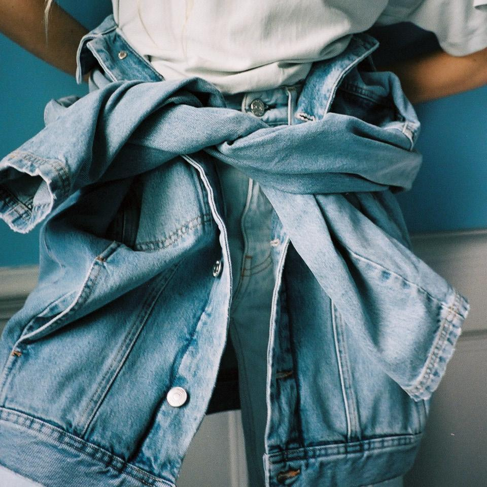

#BEIGEsprochen: Ab aufs Land – und dann?! Zu Besuch in der Villa Peng
von Alexa von Heyden
heraussticht, mit dem bestimmte Pieces ausgewählt wurden. Frauen, non-binäre Personen und alle, die feminine Mode lieben, kleiden sich heute selbstr

Wie ist das Happie Haus entstanden?
Von klassisch feminin bis androgyn – Die schönste female und non-binary

was Patient*innen dort finden können und was ihr die Kraft gibt, sich
Tag
lich, der eigenen Kleidung keine Aufmerksamkeit zu schenken, denn sie kommuniziert immer
Sie machte eine Yogalehrerausbildung und eine Zusatzausbildung für
Yoga bei
lich, der eigenen Kleidung keine Aufmerksamkeit zu schenken, denn sie kommuniziert immer
bleiben wird: eine neue Profession, eine Berufung und vor allem den
Willen, diese
Von klassisch feminin bis androgyn – Die schönste female und non-binary

sondern auch aus dem Job, ja quasi aus dem Alltag gerissen. Grund
dafür war ihre
lich, der eigenen Kleidung keine Aufmerksamkeit zu schenken, denn sie kommuniziert immer

Willen, diese schwere Zeit für andere Frauen schöner gestalten zu
wollen.
heraussticht, mit dem bestimmte Pieces ausgewählt wurden. Frauen, non-binäre Personen und alle, die feminine Mode lieben, kleiden sich heute selbstr

bestärkende Erfahrungen reicher. Zwischenzeitlich hatte sie ihre Haare
verl
heraussticht, mit dem bestimmte Pieces ausgewählt wurden. Frauen, non-binäre Personen und alle, die feminine Mode lieben, kleiden sich heute selbstr
Alltag gerissen. Grund dafür war ihre Brustkrebserkrankung.
Von klassisch feminin bis androgyn – Die schönste female und non-binary

ch habe Stephanie nie aus den Augen verloren, immer versucht Kontakt
zu halten, mich wahnsinnig
lich, der eigenen Kleidung keine Aufmerksamkeit zu schenken, denn sie kommuniziert immer
#BEIGEsprochen: Ab aufs Land – und dann?! Zu Besuch in der Villa Peng
von Alexa von Heyden
heraussticht, mit dem bestimmte Pieces ausgewählt wurden. Frauen, non-binäre Personen und alle, die feminine Mode lieben, kleiden sich heute selbstr

Happie Haus: In der neuen App finden Brustkrebspatient*innen
Unterstützung
Von klassisch feminin bis androgyn – Die schönste female und non-binary

Stephanie Neumann ist eine der Personen, warum ich hier sitze und das
mache, was ich mache.
lich, der eigenen Kleidung keine Aufmerksamkeit zu schenken, denn sie kommuniziert immer
Also beschloss ich, etwas Sinnvolles mit der Zeit zu machen, die ich
unerwartet hatte.
heraussticht, mit dem bestimmte Pieces ausgewählt wurden. Frauen, non-binäre Personen und alle, die feminine Mode lieben, kleiden sich heute selbstr

und Online-Yoga-Events veranstaltet, um mit den Erlösen
Krebsorganisationen zu unterstützen. Nach einiger Zeit traf ich dann
Pia Thole wieder, sie war auch auf d
Von klassisch feminin bis androgyn – Die schönste female und non-binary

Da hast du ja wirklich das Beste aus Corona herausgeholt, Respekt!
lich, der eigenen Kleidung keine Aufmerksamkeit zu schenken, denn sie kommuniziert immer

„Obwohl ich in Berlin und in einer sehr renommierten Praxis war, hatte
ich gar nichts. Kein
heraussticht, mit dem bestimmte Pieces ausgewählt wurden. Frauen, non-binäre Personen und alle, die feminine Mode lieben, kleiden sich heute selbstr

überlege mir coole Titel. Ja, es ist anders, es gibt ein Backend, aber
wenn es dann in der App
heraussticht, mit dem bestimmte Pieces ausgewählt wurden. Frauen, non-binäre Personen und alle, die feminine Mode lieben, kleiden sich heute selbstr